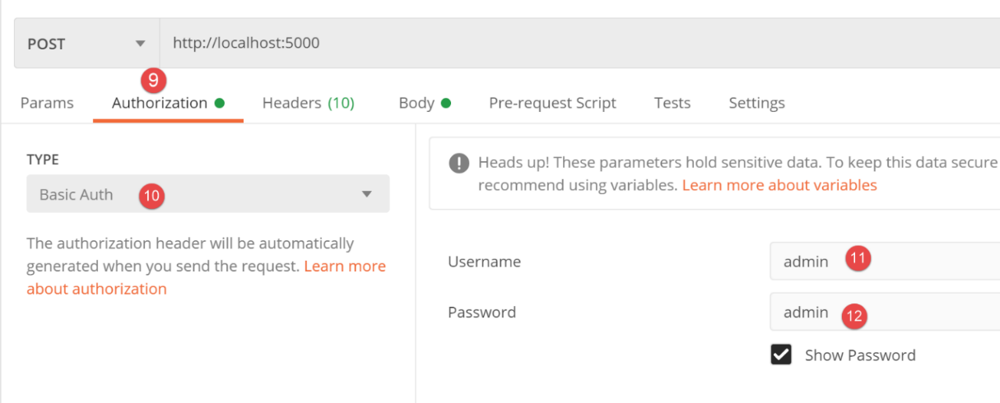

28. تمرين التطبيق: الإصدار 10
28.1. مقدمة
في أمثلة العملاء لخادم حساب الضرائب، أرسلت الخيوط N طلبات بالتسلسل إذا كان عليها معالجة N دافعي ضرائب. الفكرة هنا هي إرسال طلب واحد يغلف N دافعي الضرائب. بالنسبة لكل منهم، يجب إرسال المعلومات [متزوج، أطفال، راتب]. يمكن إرسال هذه المعلومات كمعلمات:
- في عنوان URL. وهذا يؤدي إلى عنوان URL طويل لا معنى له؛
- في نص طلب HTTP. ونحن نعلم أن هذا النص مخفي عن المستخدم الذي يستخدم متصفحًا؛
في كلتا الحالتين، يمكنك استخدام طلب [GET] أو [POST]. سنستخدم طلب POST مع المعلمات المضمنة في نص طلب HTTP.
لم تتغير بنية العميل/الخادم:

28.2. خادم الويب

يتم إنشاء المجلد [http-servers/05] مبدئيًا عن طريق نسخ المجلد [http-servers/02]. نعود إلى التبادلات JSON بين العميل والخادم. لقد رأينا أن التبديل من JSON إلى XML أمر بسيط للغاية.
28.2.1. التكوين
يظل التكوين [config, config_database, config_layers] كما هو في الإصدارات السابقة. لن نعيد تناوله مرة أخرى.
28.2.2. البرنامج النصي الرئيسي [main]
النص البرمجي [main] مطابق للنص الموجود في المجلد [http-servers/02] الذي قمنا بنسخه. هناك اختلاف واحد فقط:
- السطر 2: يتم الآن الوصول إلى عنوان URL / عبر طلب POST؛
28.2.3. [index_controller]
يتطور [index_controller] على النحو التالي:
- السطر 9: يتلقى وحدة التحكم:
- طلب العميل؛
- تكوين الخادم [config]؛
- الأسطر 14–18: نسترد نص طلب POST. يمكن ترميز المعلمات المُغلفة في نص طلب HTTP بطرق مختلفة. وقد صادفنا واحدة منها بالفعل: [x-www-form-urlencoded]. هنا، سنستخدم ترميزًا آخر: JSON؛
- السطر 18: [request.data] يسترد نص طلب HTTP. هنا، نسترد نصًا، ونعلم أن هذا النص هو JSON يمثل قائمة من القواميس [married, children, salary]؛
- الأسطر 19–24: نسترد قائمة القواميس هذه؛
- الأسطر 22–24: إذا فشل استرداد JSON، نقوم بتسجيل الخطأ؛
- الأسطر 26-28: إذا وجدنا أن الكائن المسترد ليس قائمة أو أنه قائمة فارغة، نقوم بتسجيل الخطأ؛
- الأسطر 29-38: إذا تم استرداد قائمة بنجاح، نتحقق من أنها بالفعل قائمة من القواميس؛
- الأسطر 40-43: إذا حدث خطأ، نتوقف هنا ونرسل استجابة خطأ إلى العميل؛
- الأسطر 45–69: نتحقق الآن من كل قاموس:
- يجب أن تحتوي على المفاتيح [married, children, salary]؛
- يجب أن تسمح لنا بإنشاء كائن [TaxPayer] صالح؛
- الأسطر 65–69: إذا تم اكتشاف خطأ في قاموس، يتم إضافته إلى نفس القاموس تحت المفتاح ‘error’؛
- الأسطر 72–75: تم تجميع القواميس التي تحتوي على أخطاء في القائمة [list_errors]. إذا لم تكن هذه القائمة فارغة، يتم إرسالها في استجابة خطأ إلى العميل؛
- السطر 77: في هذه المرحلة، نعلم أنه يمكننا إنشاء قائمة من الكائنات من النوع [TaxPayer] من نص الطلب المرسل من العميل؛
- الأسطر 84-91: نقوم بمعالجة قائمة القواميس المستلمة؛
- السطر 86: من القاموس، نقوم بإنشاء كائن [TaxPayer]؛
- السطر 89: نحسب الضريبة لهذا [TaxPayer]؛
- السطر 91: نعلم أن [taxpayer] قد تم تعديله بواسطة حساب الضريبة. نقوم بتحويله إلى قاموس وإضافته إلى قائمة النتائج؛
- السطر 93: يتم إرسال قائمة النتائج هذه إلى العميل؛
28.2.4. اختبار الخادم
سنقوم باختبار الخادم باستخدام عميل Postman:
- نقوم بتشغيل خادم الويب ونظام إدارة قواعد البيانات وخادم البريد [hMailServer]؛
- نقوم بتشغيل عميل Postman ووحدة التحكم الخاصة به (Ctrl-Alt-C)؛

- في [1]: نرسل طلب [POST]؛
- في [2]: عنوان URL للخادم؛
- في [3]: نص طلب HTTP؛
- في [5]: نحدد أن هذا النص يجب إرساله كسلسلة JSON؛
- في [4]: ننتقل إلى الوضع [raw] لنتمكن من نسخ ولصق سلسلة JSON؛
- في [6]: نلصق سلسلة JSON المأخوذة من أحد ملفات [results.json] الخاصة بالإصدارات المختلفة. ثم، بالنسبة لكل دافع ضرائب، نحتفظ فقط بالخصائص [married, salary, children]؛

- في [7]، ننظر إلى رؤوس HTTP التي سيرسلها عميل Postman إلى الخادم؛
- في [8]، نرى أنه سيرسل رأس [Content-Type] يشير إلى أن الطلب يحتوي على نص مشفر بتنسيق JSON. ويرجع ذلك إلى الاختيار الذي تم في [5] سابقًا؛

- في [9-12]: ندرج بيانات الاعتماد التي يتوقعها الخادم في الطلب؛
نرسل هذا الطلب. يكون رد الخادم كما يلي:

- في [3]، تلقينا JSON؛
- في [4]، ضريبة دافعي الضرائب؛
دعونا نفحص الحوار بين العميل والخادم الذي جرى في وحدة تحكم Postman (Ctrl-Alt-C):
أرسل عميل Postman النص التالي:
- السطر 1: طلب POST إلى الخادم؛
- السطر 2: رأس مصادقة HTTP؛
- السطر 3: يبلغ العميل الخادم بأنه يرسل سلسلة JSON وأن طول هذه السلسلة يبلغ 824 بايت (السطر 11)؛
- الأسطر 13–69: نص JSON للطلب؛
رد الخادم بالنص التالي:
HTTP/1.0 200 OK
Content-Type: application/json; charset=utf-8
Content-Length: 1461
Server: Werkzeug/1.0.1 Python/3.8.1
Date: Tue, 28 Jul 2020 07:16:34 GMT
{"réponse": {"results": [{"marié": "oui", "enfants": 2, "salaire": 55555, "impôt": 2814, "surcôte": 0, "taux": 0.14, "décôte": 0, "réduction": 0}, {"marié": "oui", "enfants": 2, "salaire": 50000, "impôt": 1384, "surcôte": 0, "taux": 0.14, "décôte": 384, "réduction": 347}, {"marié": "oui", "enfants": 3, "salaire": 50000, "impôt": 0, "surcôte": 0, "taux": 0.14, "décôte": 720, "réduction": 0}, {"marié": "non", "enfants": 2, "salaire": 100000, "impôt": 19884, "surcôte": 4480, "taux": 0.41, "décôte": 0, "réduction": 0}, {"marié": "non", "enfants": 3, "salaire": 100000, "impôt": 16782, "surcôte": 7176, "taux": 0.41, "décôte": 0, "réduction": 0}, {"marié": "oui", "enfants": 3, "salaire": 100000, "impôt": 9200, "surcôte": 2180, "taux": 0.3, "décôte": 0, "réduction": 0}, {"marié": "oui", "enfants": 5, "salaire": 100000, "impôt": 4230, "surcôte": 0, "taux": 0.14, "décôte": 0, "réduction": 0}, {"marié": "non", "enfants": 0, "salaire": 100000, "impôt": 22986, "surcôte": 0, "taux": 0.41, "décôte": 0, "réduction": 0}, {"marié": "oui", "enfants": 2, "salaire": 30000, "impôt": 0, "surcôte": 0, "taux": 0.0, "décôte": 0, "réduction": 0}, {"marié": "non", "enfants": 0, "salaire": 200000, "impôt": 64210, "surcôte": 7498, "taux": 0.45, "décôte": 0, "réduction": 0}, {"marié": "oui", "enfants": 3, "salaire": 200000, "impôt": 42842, "surcôte": 17283, "taux": 0.41, "décôte": 0, "réduction": 0}]}}
- السطر 1: تم تنفيذ الطلب بنجاح؛
- السطر 2: نص استجابة الخادم عبارة عن سلسلة JSON. يبلغ طولها 1461 بايت (السطر 3)؛
- السطر 7: استجابة JSON من الخادم؛
الآن دعونا نختبر بعض حالات الخطأ.
الحالة 1: نرسل أي شيء
POST / HTTP/1.1
Authorization: Basic YWRtaW46YWRtaW4=
Content-Type: application/json
User-Agent: PostmanRuntime/7.26.2
Accept: */*
Cache-Control: no-cache
Postman-Token: 47652706-9744-46a0-a682-de010e5406c0
Host: localhost:5000
Accept-Encoding: gzip, deflate, br
Connection: keep-alive
Content-Length: 3
abc
HTTP/1.0 400 BAD REQUEST
Content-Type: application/json; charset=utf-8
Content-Length: 125
Server: Werkzeug/1.0.1 Python/3.8.1
Date: Tue, 28 Jul 2020 07:43:27 GMT
{"réponse": {"erreurs": ["le corps du POST n'est pas une chaîne jSON valide : Expecting value: line 1 column 1 (char 0)"]}}
- السطر 13: تم إرسال السلسلة [abc]، وهي ليست سلسلة JSON صالحة (السطر 3)؛
- السطر 15: يستجيب الخادم برمز خطأ 400؛
- السطر 21: استجابة JSON من الخادم؛
الحالة 2: لنرسل سلسلة JSON صالحة ليست قائمة
POST / HTTP/1.1
Authorization: Basic YWRtaW46YWRtaW4=
Content-Type: application/json
User-Agent: PostmanRuntime/7.26.2
Accept: */*
Cache-Control: no-cache
Postman-Token: 03b64735-9239-47b3-b92d-be7c9ebc7559
Host: localhost:5000
Accept-Encoding: gzip, deflate, br
Connection: keep-alive
Content-Length: 17
{"att1":"value1"}
HTTP/1.0 400 BAD REQUEST
Content-Type: application/json; charset=utf-8
Content-Length: 97
Server: Werkzeug/1.0.1 Python/3.8.1
Date: Tue, 28 Jul 2020 07:50:11 GMT
{"réponse": {"erreurs": ["le corps du POST n'est pas une liste ou alors cette liste est vide"]}}
الحالة 3: لنرسل سلسلة JSON عبارة عن قائمة لا تحتوي جميع عناصرها على قواميس
POST / HTTP/1.1
Authorization: Basic YWRtaW46YWRtaW4=
Content-Type: application/json
User-Agent: PostmanRuntime/7.26.2
Accept: */*
Cache-Control: no-cache
Postman-Token: a1528a5f-777c-413f-b3be-7d4e9955b12a
Host: localhost:5000
Accept-Encoding: gzip, deflate, br
Connection: keep-alive
Content-Length: 7
[0,1,2]
HTTP/1.0 400 BAD REQUEST
Content-Type: application/json; charset=utf-8
Content-Length: 85
Server: Werkzeug/1.0.1 Python/3.8.1
Date: Tue, 28 Jul 2020 07:52:10 GMT
{"réponse": {"erreurs": ["le corps du POST doit être une liste de dictionnaires"]}}
الحالة 4: لنرسل قائمة من القواميس مع قاموس لا يحتوي على المفاتيح الصحيحة
POST / HTTP/1.1
Authorization: Basic YWRtaW46YWRtaW4=
Content-Type: application/json
User-Agent: PostmanRuntime/7.26.2
Accept: */*
Cache-Control: no-cache
Postman-Token: ba964d81-c9d9-46ff-a521-b4c4e5639484
Host: localhost:5000
Accept-Encoding: gzip, deflate, br
Connection: keep-alive
Content-Length: 19
[{"att1":"value1"}]
HTTP/1.0 400 BAD REQUEST
Content-Type: application/json; charset=utf-8
Content-Length: 112
Server: Werkzeug/1.0.1 Python/3.8.1
Date: Tue, 28 Jul 2020 07:54:33 GMT
{"réponse": {"erreurs": [{"att1": "value1", "erreur": "MyException[2, la clé [att1] n'est pas autorisée]"}]}}
الحالة 5: لنرسل قائمة من القواميس مع قاموس يحتوي على مفاتيح مفقودة:
POST / HTTP/1.1
Authorization: Basic YWRtaW46YWRtaW4=
Content-Type: application/json
User-Agent: PostmanRuntime/7.26.2
Accept: */*
Cache-Control: no-cache
Postman-Token: 98aec51d-f37d-4c14-81cd-c7ffcbbcdc65
Host: localhost:5000
Accept-Encoding: gzip, deflate, br
Connection: keep-alive
Content-Length: 18
[{"marié":"oui"}]
HTTP/1.0 400 BAD REQUEST
Content-Type: application/json; charset=utf-8
Content-Length: 125
Server: Werkzeug/1.0.1 Python/3.8.1
Date: Tue, 28 Jul 2020 07:56:40 GMT
{"réponse": {"erreurs": [{"marié": "oui", "erreur": "le dictionnaire doit inclure les clés [marié, enfants, salaire]"}]}}
الحالة 6: لنرسل قائمة من القواميس تحتوي إحداها على المفاتيح الصحيحة، بينما تحتوي بعضها على قيم غير صحيحة:
POST / HTTP/1.1
Authorization: Basic YWRtaW46YWRtaW4=
Content-Type: application/json
User-Agent: PostmanRuntime/7.26.2
Accept: */*
Cache-Control: no-cache
Postman-Token: 3083e601-dee4-4e15-9ea4-fc0328d0fcf0
Host: localhost:5000
Accept-Encoding: gzip, deflate, br
Connection: keep-alive
Content-Length: 46
[{"marié":"x", "enfants":"x", "salaire":"x"}]
HTTP/1.0 400 BAD REQUEST
Content-Type: application/json; charset=utf-8
Content-Length: 167
Server: Werkzeug/1.0.1 Python/3.8.1
Date: Tue, 28 Jul 2020 07:59:32 GMT
{"réponse": {"erreurs": [{"marié": "x", "enfants": "x", "salaire": "x", "erreur": "MyException[31, l'attribut marié [x] doit avoir l'une des valeurs oui / non]"}]}}
28.3. عميل الويب

يتم الحصول على ملف [http-clients/05] (الإصدار 10) في البداية عن طريق نسخ ملف [http-clients/02] (الإصدار 7). ثم يتم تعديله.
28.3.1. طبقة [dao]
يتم تنفيذ طبقة [dao] بواسطة الفئة [ImpôtsDaoWithHttpClient] التالية:
- الأسطر 1–26: يظل الكود كما هو في الإصدار 7 والإصدارات الأخرى؛
- الأسطر 27–70: تم إدخال طريقة جديدة [calculate_tax_in_bulk_mode]، والغرض منها هو حساب الضريبة لقائمة من دافعي الضرائب؛
- السطر 28: [taxpayers] هي قائمة دافعي الضرائب هذه؛
- الأسطر 31–39: نقوم بتحويل قائمة من كائنات [TaxPayer] إلى قائمة من القواميس باستخدام دالة [map]؛
- الأسطر 34–38: تقوم دالة لامدا المستخدمة بتحويل كائن من النوع [TaxPayer] إلى قاموس من النوع [dict] يحتوي فقط على المفاتيح [married, children, salary]. للقيام بذلك، نستخدم المعلمة المسماة [included_keys] من الدالة [BaseEntity.asdict]. لاحظ أنه لتحديد الأسماء الدقيقة للخصائص التي سيتم تضمينها في المعلمات [excluded_keys, included_keys]، يجب استخدام القاموس المحدد مسبقًا [taxpayer.__dict__]؛
- الأسطر 41–48: الاتصال بالخادم واسترداد استجابة HTTP الخاصة به؛
- السطور 44 و 48:
- نستخدم الطريقة الثابتة [requests.post] لإرسال طلب POST إلى الخادم؛
- يُستخدم المعلمة المسماة [json] للإشارة إلى أن نص طلب POST عبارة عن سلسلة JSON. وسيكون لذلك نتيجتان:
- سيتم تحويل الكائن المخصص للمعلمة المسماة [json]، وهو في هذه الحالة قائمة من القواميس، إلى سلسلة JSON؛
- الرأس
سيتم تضمينه في رؤوس HTTP لطلب POST؛
- السطر 59: يتم فك تسلسل استجابة JSON للخادم إلى قاموس [result]؛
- الأسطر 61–63: تتم معالجة أي خطأ يرسله الخادم؛
- السطر 65: توجد نتائج حساب الضريبة في قائمة من القواميس؛
- الأسطر 67-69: تُستخدم هذه النتائج لتحديث القائمة الأولية للمكلفين [taxpayers] التي تم استلامها في الأصل بواسطة الطريقة في السطر 28؛
- السطر 70: هنا، تم تحديث القائمة الأولية لدافعي الضرائب بنتائج حساب الضريبة؛
28.3.2. البرنامج النصي الرئيسي [main]
يتطور البرنامج النصي الرئيسي [main] على النحو التالي: يتم تعديل الدالة [thread_function] التي تنفذها الخيوط التي أنشأها العميل فقط. ويبقى باقي الكود دون تغيير.
- السطران 9–10: في حين كان لدينا سابقًا حلقة تمرر كل دافع ضرائب على حدة إلى طريقة [dao.calculate_tax]، فإننا هنا نقوم باستدعاء واحد لطريقة [dao.calculate_tax_in_bulk_mode]، ونمرر جميع دافعي الضرائب إليها؛
28.3.3. تنفيذ العميل
سنقارن أوقات التنفيذ بين الإصدارات:
- 7، حيث يكون كل دافع ضرائب موضوع طلب HTTP؛
- 10 (هذه النسخة)، حيث يتم تجميع دافعي الضرائب في طلب HTTP واحد؛
أولاً، الإصدار 6. لمقارنة الإصدارين، قمنا بتعيين خاصية [sleep_time] للخادم على صفر حتى لا يكون هناك انتظار قسري للخيوط. سجلات العميل هي كما يلي:
2020-07-28 14:20:45.811347, Thread-1 : début du thread [Thread-1] avec 4 contribuable(s)
2020-07-28 14:20:45.811347, Thread-1 : début du calcul de l'impôt de {"id": 1, "marié": "oui", "enfants": 2, "salaire": 55555}
…
2020-07-28 14:20:45.913065, Thread-3 : fin du calcul de l'impôt de {"id": 11, "marié": "oui", "enfants": 3, "salaire": 200000, "impôt": 42842, "surcôte": 17283, "taux": 0.41, "décôte": 0, "réduction": 0}
2020-07-28 14:20:45.913065, Thread-3 : fin du thread [Thread-3]
وبالتالي، فإن وقت التنفيذ الذي يستغرقه العميل لحساب الضريبة لـ 11 دافع ضرائب هو [913065-811347= 101718]، أي حوالي 102 مللي ثانية.
لنقم بنفس الشيء مع الإصدار 10 (تم تعيين sleep_time للخادم على صفر). تكون سجلات العميل عندئذٍ كما يلي:
2020-07-28 14:25:31.871428, Thread-1 : début du calcul de l'impôt des 4 contribuables
2020-07-28 14:25:31.873594, Thread-2 : début du calcul de l'impôt des 3 contribuables
2020-07-28 14:25:31.877429, Thread-3 : début du calcul de l'impôt des 3 contribuables
2020-07-28 14:25:31.882855, Thread-4 : début du calcul de l'impôt des 1 contribuables
2020-07-28 14:25:31.930723, Thread-2 : {"réponse": {"results": [{"marié": "non", "enfants": 3, "salaire": 100000, "impôt": 16782, "surcôte": 7176, "taux": 0.41, "décôte": 0, "réduction": 0}, {"marié": "oui", "enfants": 3, "salaire": 100000, "impôt": 9200, "surcôte": 2180, "taux": 0.3, "décôte": 0, "réduction": 0}, {"marié": "oui", "enfants": 5, "salaire": 100000, "impôt": 4230, "surcôte": 0, "taux": 0.14, "décôte": 0, "réduction": 0}]}}
….
2020-07-28 14:25:31.935958, Thread-4 : fin du calcul de l'impôt des 1 contribuables
2020-07-28 14:25:31.935958, Thread-1 : fin du calcul de l'impôt des 4 contribuables
وبالتالي، فإن وقت التنفيذ الذي استغرقه العميل لحساب الضريبة لـ 11 دافع ضرائب هو [935958-871428= 64530 نانو ثانية] (السطر 8 – السطر 1)، أي حوالي 65 مللي ثانية. وبالتالي، فإن الإصدار الجديد 10 يوفر تحسناً في الأداء بنسبة 57٪ تقريباً مقارنة بالإصدار 7.
28.3.4. اختبارات طبقة [dao] للعميل

يشبه اختبار [TestHttpClientDao] للعميل في الإصدار 10 إلى حد كبير الاختبار الموجود في الإصدار 7:
- السطر 14: بدلاً من استدعاء طريقة [dao.calculate_tax]، نستدعي طريقة [dao.calculate_tax_in_bulk_mode]، ونمرر لها قائمة (مشار إليها بالأقواس المربعة) من دافعي الضرائب؛
تم اجتياز جميع الاختبارات.